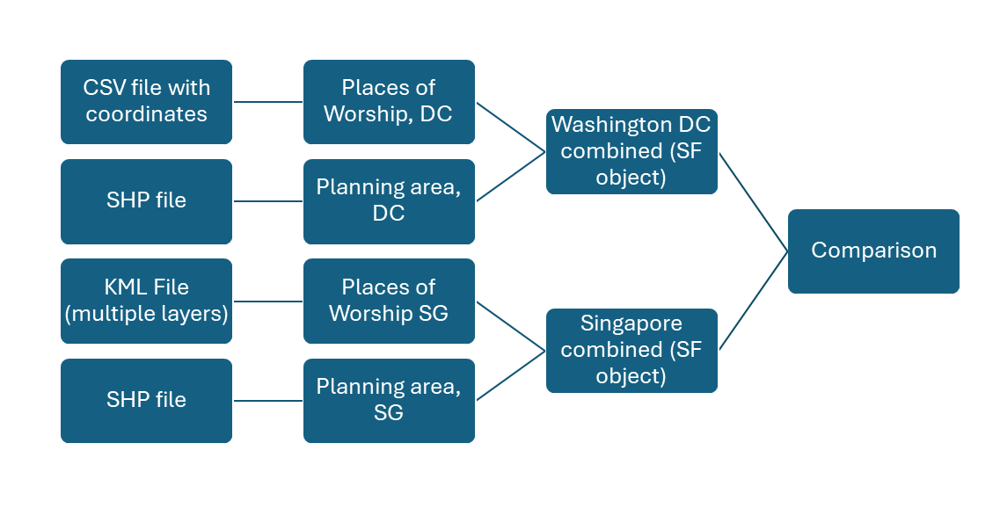
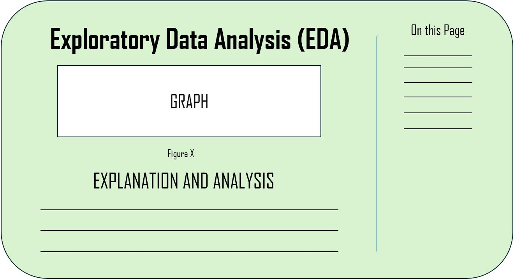
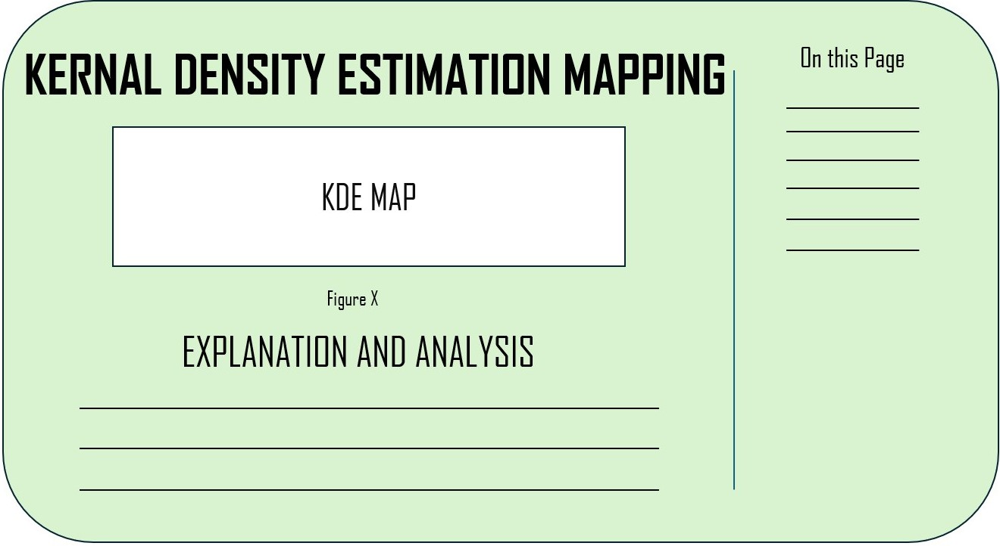
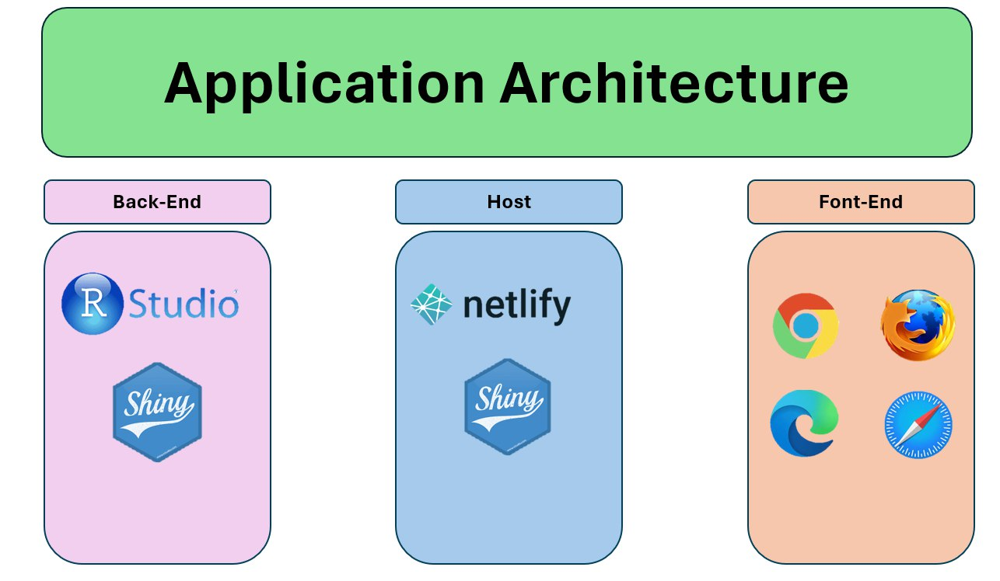
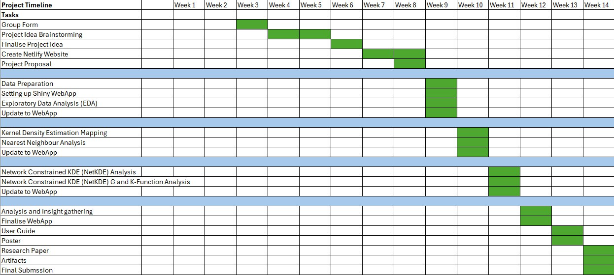

| Data | Type | Description…Remarks | Source |
|---|---|---|---|
| Singapore, Places of Worship | .kml | The file contains multiple layers which the author has created on google maps. Extra caution should be taken when manipulating data | https://www.google.com/maps/d/u/0/viewer?mid=1_KzKsVTCJ5mv0mZ55T0gE9gxX5EjzE9h&ll=1.3587380243374025%2C103.82081337966211&z=12 |
| Washington DC, Places of Worship | .csv | - | https://opendata.dc.gov/datasets/b134de8f8eaa49499715a38ba97673c8_5/explore |
| Description/Master Plan 2019 Subzone Boundary (No Sea), Singapore | .shp | We’ll use the dataset provided in Take-home Exercise 1 | https://beta.data.gov.sg/collections/1749/view |
| Comprehensive planning areas, Washington DC | .shp | Multiple file types are available in the source. We have the option to access the data in various forms. | https://opendata.dc.gov/datasets/203c2342b36240949e0ad95d75a5bdca_2/explore |
Project Proposal: Places of Worship
THEME: SPATIAL POINT PATTERN ANALYSIS
1 Background
The United States stands as a mosaic of diverse cultures, traditions, and belief systems. Within the country, we can find a multitude of worship places that serve as focal points for spiritual nourishment, community cohesion, and cultural expression. This project will focus on the locations of worship places across the country and unravel the spatial dimensions of religious diversity and explore the profound connections between geography and faith.
2 Problem & Motivation
This project holds immense significance in promoting intercultural dialogue, fostering religious tolerance, and contributing to a broader understanding of the United States’ multicultural identity. By studying the geographical positions of the worship places, we aim to provide valuable insights for policymakers, urban planners, researchers, and the public, facilitating informed decision-making and enhancing appreciation for the diverse religious mosaic that defines the American experience.
3 Project Objectives
• Comprehensive Mapping: Create a comprehensive map detailing the geographic distribution of worship places, categorizing them by religious affiliation. This can be done in a form of drop boxes and slider bars
• Spatial Analysis: Conduct spatial analysis to identify clustering, density, and patterns of religious diversity, shedding light on the coexistence of various faith communities.
• Historical Context: Integrate historical data to understand the evolution of worship places, considering factors such as migration, urbanization, and cultural shifts.
• Accessibility Assessment: Investigate the accessibility of worship places to understand how geographic factors may influence the ability of communities to engage in religious practices.
4 Data Sets and Descriptions
5 Data Preparation and Diagram flow

6 Literature Review
Title: Towards a spatial theory of worship, Some observations from Presbyterian Scotland
Source: https://doi-org.libproxy.smu.edu.sg/10.1080/14649360120114143
Summary: The argue that ‘worship’, a term which has no universal application in religious studies, has been thinly conceived in geographical literature and must be examined both as process and as practice. Worship is here considered as the dynamic and varied human response to the theological proposition of Divinity. Specifically, the paper explores the dialectic between the theology of the Reformation and the practice of formal worship, a relation that is given a spatial expression in the Sabbath service.
Title: Religion gnaws urban planning: the geography of places of worship in Kumasi, Ghana
Source: https://www.tandfonline.com/doi/full/10.1080/19463138.2015.1074581
Summary: investigates spatial distribution of places of worship (PoW) and its implications on sustainable land use planning in a rapidly urbanising city of Kumasi, Ghana. Using semi-structured interviews, document reviews and agency consultations, this paper focused on three issues: (a) the location and distribution of PoW, (b) factors considered in the location of these PoW by faith groups and (c) planning implications of PoW.
Title: Spatial Analysis with R: Statistics, Visualization, and Computational Methods
Summary: The use and growth of AI, ML and deep learning algorithms with a spatial perspective, and the interdisciplinary use of spatial analysis are all covered in this book. It covers traditional statistical method and algorithms to provide a concept-based problem solving learning approach to mastering practical spatial analytics.
Lit-Review Learning points:
Apart from the articles we have read above, we understand that the concept of geospatial is barely used in conjunction to places of worship. However, it is essential for the current age of society to understand the impact of worship. The analytical understanding is minimal and therefore we aim to provide more understanding over the religious places in both countries.
7 Methodology
7.1 Data Preparation
Data source from online platforms
Importing spatial data into the R environment
Data wrangling
7.2 Exploratory Data Analysis
Plotting up graphs for visualization and better understanding of the data
Examine the distribution of spatial points
7.3 Spatial Point Patterns Analysis
First-Order Analysis
- Kernel Density Estimation Mapping - Observe the intensity or the density of points
- Nearest Neighbor Analysis - Examine the distribution patterns
Network Constrained Spatial Point Patterns Analysis
- Using G and K function Analysis - Observe the degree of clustering or dispersion of the spatial points
8 Storyboard
8.1 About Page
8.2 EDA Page

8.3 KDE Page

8.4 NetKDE Page

9 Application architecture

10 Project timeline
